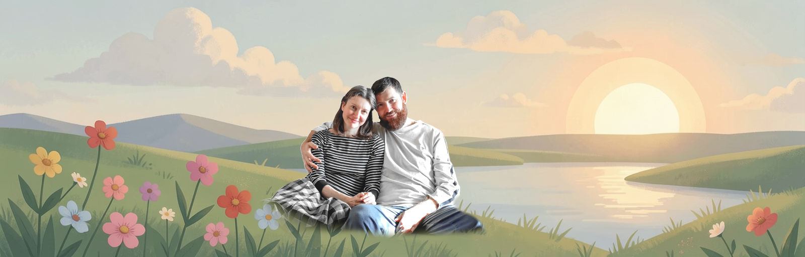

О нас

Кто мы
Мы – православная семья, Сергей и Ксения Сазуровы.
Сергей – разработчик проекта. Более 20 лет работает в IT, теперь создаёт цифровые ресурсы для обучения людей с особенностями развития.
Ксения – ведёт блог в ВКонтакте и делает его красивым и уютным местом.
Наше сообщество
Мы объединяем родителей, педагогов, специалистов и IT-волонтёров, которым близка тема помощи людям с особенностями развития. Присоединяйтесь: ВКонтакте и MAX. Если вы умеете программировать, рисовать, озвучивать или просто хотите помочь, напишите нам.
Волонтерам: если вы умеете программировать, рисовать, озвучивать или просто хотите помочь, напишите нам.
Логопедам и методистам: мы будем благодарны за помощь в развитии нашего образовательного приложения и кабинета ведения группы учеников.
Нашли неточность или знаете хороший материал?
Напишите нам любым удобным способом – контакты указаны выше.
Карта сайта
- Главная – о проекте и что есть в приложении
- Как заниматься – советы родителям и педагогам
- Скачать – RuStore и APK
- Сообщество – ВКонтакте и MAX
- Помощь и Документы
- Библиотека – материалы о синдроме Дауна со ссылками на первоисточники